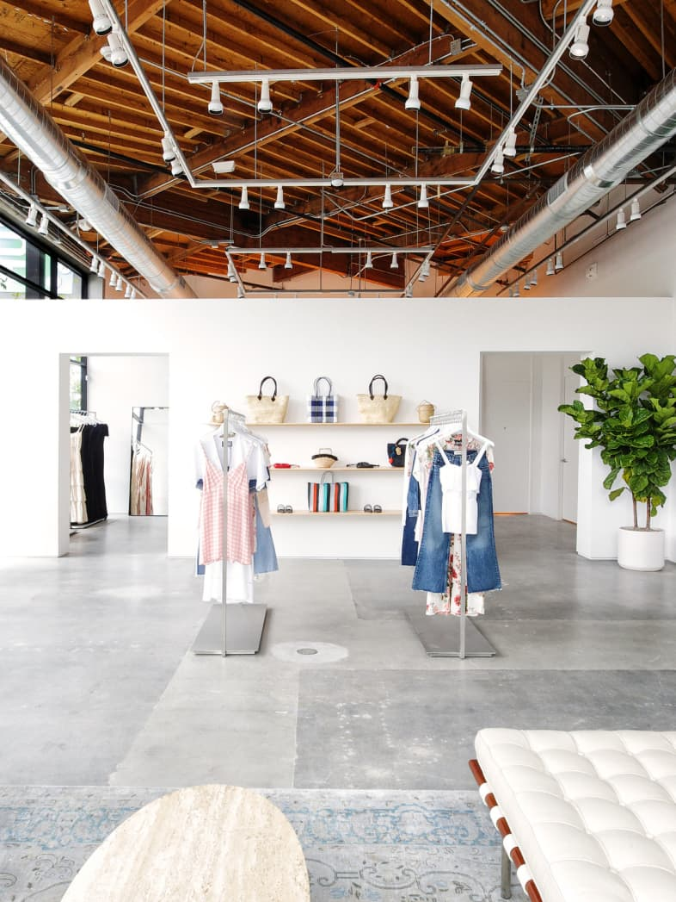
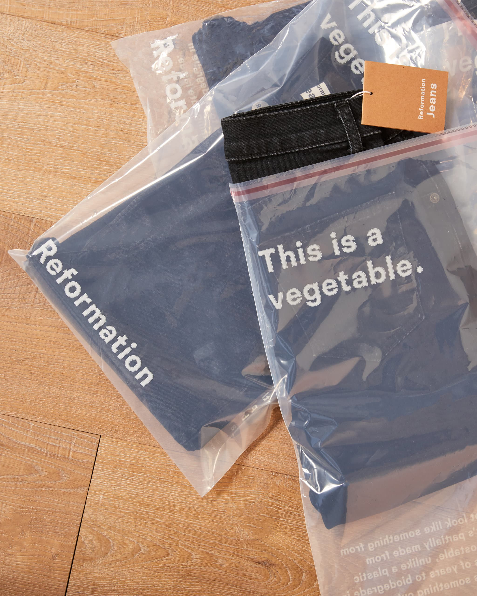

We put sustainability at the core of everything we do. We invest in green building infrastructure to minimize our waste, water, and energy footprints. By providing on-the-job training and opportunities for growth, we also invest in the people who make this revolution possible.

Energy-efficiency
We source electricity offsets from 100% wind power suppliers and use LED lighting and Energy Star-rated appliances in our offices.
Recycling
We recycle, compost organic wastes, and recycle or donate our textile scraps whenever possible. Zero waste is our goal. Right now, we recycle about 75% of all our garbage. Our goal is to reach over 85%. Every little thing adds up.
Our team
Over three-quarters of Reformation’s management team are women (roar!) or people from underrepresented populations.
Benefits
We provide health benefits to all full-time employees including our manufacturing team. We’ve even made getting to work part of our mission by offering Metro passes to our entire HQ team to encourage more use of public transportation.

E-commerce
On average, e-commerce uses about 30% less energy than traditional retail. Good news because the majority of our customers use our online site to make purchases (we’re all for never getting out of bed either). We also calculate the carbon footprint of our web server and your screen’s energy demand while browsing the Ref website. And yes, we offset that too!
Hangers & totes
Typical hangers are made of plastic or metal and have the lifespan of only 3 months. We use recycled paper hangers to lessen the demand for new materials and to keep junk from landfills. Americans toss 102 billion plastic bags a year. We opt for reusable totes because they lighten the load. Plus they’re way cuter.
Green building
It’s our mission to design innovative and eco stores. We incorporate materials like LED fixtures, rammed earth, recycled fabric insulation, and other stuff to make our stores as sustainable as possible. We also calculate the construction footprint, and offset our store builds 100%.
All our LA retail stores and HQ West are now green business certified, which basically means we’re operating using strategies that improve energy savings, water efficiency, resource stewardship, and reducing CO2 emissions. You know, all the good stuff. We’re super proud and happy to be part of the green business community of Los Angeles as well as the California Green Business Network. Learn more about it at the California Green Business Network website.
Next up: San Francisco retail stores.
Sustainable purchasing
Reformation is committed to minimizing our environmental impact and achieving fair, safe and healthy working conditions throughout our supply chain. We seek to partner with suppliers who share a common vision of sustainability, accountability and transparency. We currently require that suppliers meet our standards for: social responsibility, safe & non-toxic, and better materials.

Fabric
To keep our supply chain as sustainable as possible, we make sure our suppliers take social and environmental standards seriously. By sourcing locally when possible, and screening all of our suppliers, we minimize environmental impacts and ensure there’s no unfair or unsafe labor that goes into making our clothes.
Local manufacturing
Over 65% of our cutting and sewing is done in Los Angeles and we manufacture the majority of our products in our own factory (depending on the season and the styles we're making that week). All other garments are produced by responsible manufacturing partners here in the U.S. or abroad using our same sustainable standards and materials.
Purchasing
Right now, the majority of our knit fabric comes from the US. The remaining is purchased from overseas suppliers. This happens when we’re unable to find anybody to make these fabrics domestically because fabric-weaving equipment for delicate wovens left the U.S. a few decades ago. Our goal is to one day bring this know-how back—both internally and domestically.
Dyeing & Finishing
The dyeing stage in textile manufacturing not only uses a lot of energy and water, but it also introduces the fabric to chemicals found in inks and pigments. We test all of our stuff against our Restricted Substance List (RSL) to confirm there are no hazardous substances in our products and to ensure our products are safe, and comply with international laws. Our RSL is based on the AFIRM Group industry level standards. This list applies to raw materials, finished goods and its concentrations. Download the full version of our RSL with concentration limits here.
In addition to testing all of our stuff against our RSL we currently try and work with dye houses and printers that have the following certified dying systems.
BLUESIGN® system
With an A+ grade in textile dyeing, Bluesign certified dyeing facilities only use safe input chemicals, monitor their air and water emissions and ensure worker safety so that the dyed fabric is safe for the end user, workers and the environment. As of 2017, all of Reformation solid silk and velvet is Bluesign certified.
OEKO-TEX® Standard 100
Similar to Bluesign, Oekotex also checks for presence of hazardous chemicals in the dyed fabric. It checks for carcinogens, azo dyes and other chemical limits in accordance to the European REACH standards.